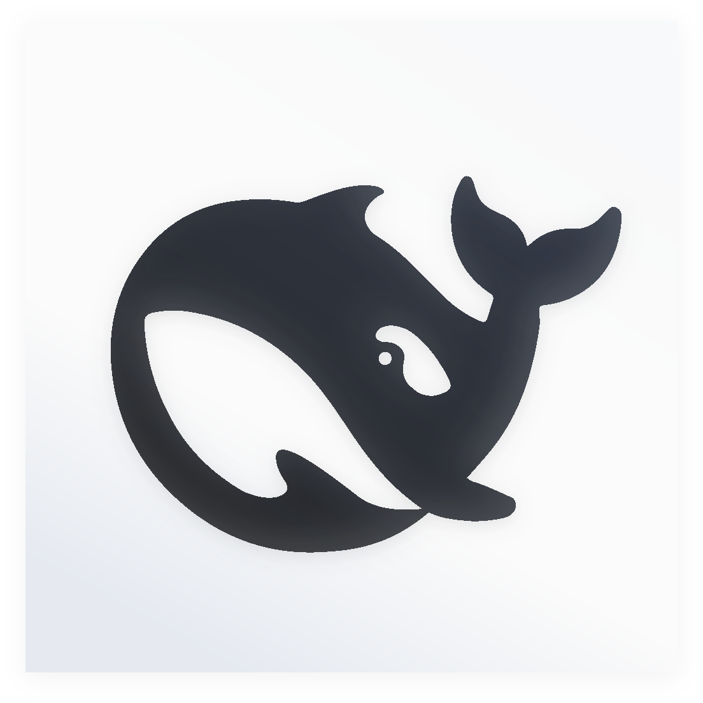
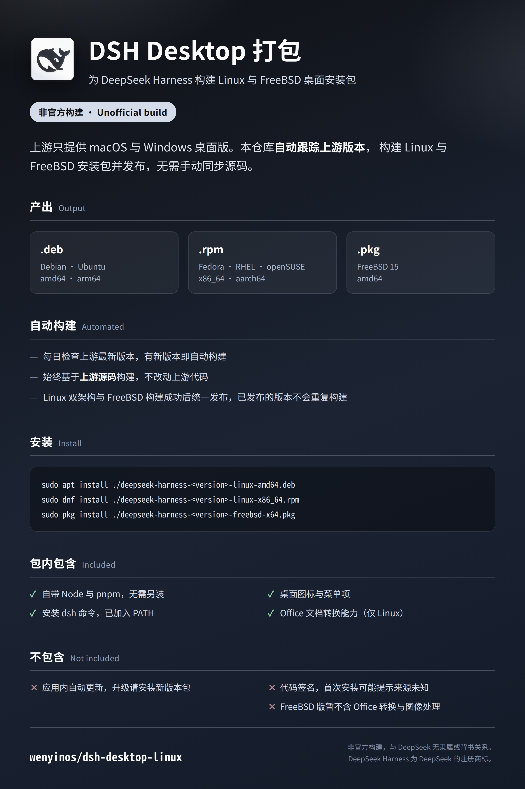

.deb
Debian · Ubuntu
amd64 · arm64
amd64 · arm64

为 DeepSeek Harness 构建 Linux 与 FreeBSD 桌面安装包
上游只提供 macOS 与 Windows 桌面版。本仓库自动跟踪上游版本，构建 Linux 与 FreeBSD 安装包并发布，无需手动同步源码。
# Debian / Ubuntu sudo apt install ./deepseek-harness-<version>-linux-amd64.deb # Fedora / RHEL / openSUSE sudo dnf install ./deepseek-harness-<version>-linux-x86_64.rpm # FreeBSD 15 sudo pkg install ./deepseek-harness-<version>-freebsd-x64.pkg
请按 CPU 架构选择文件：x86_64 / amd64 对应 x64，aarch64 / arm64 对应 arm64。
FreeBSD 包的依赖（含 Electron 运行时）由 pkg 自动解析。
PATHpkg 从 FreeBSD 仓库自动解析